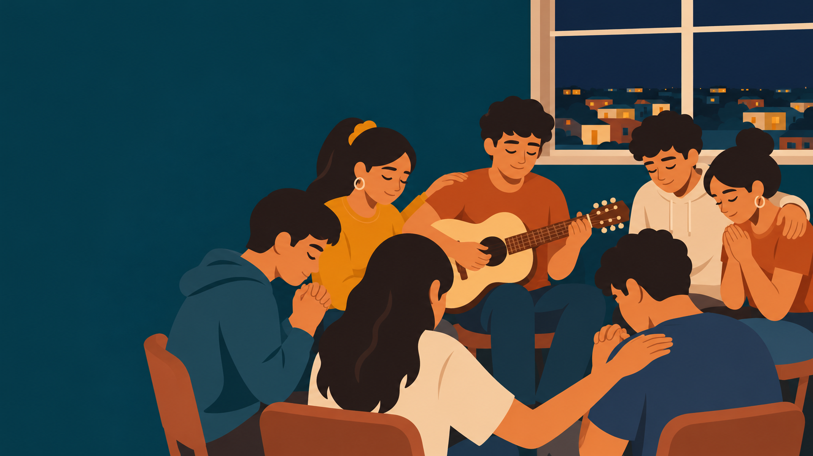
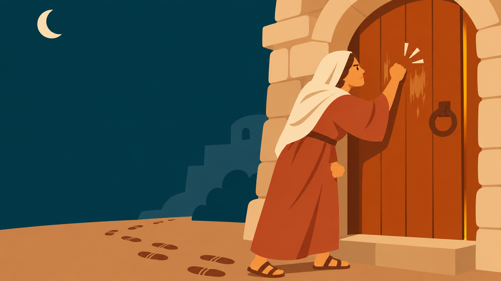
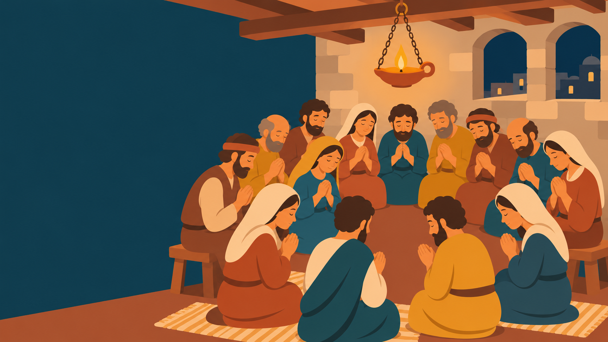
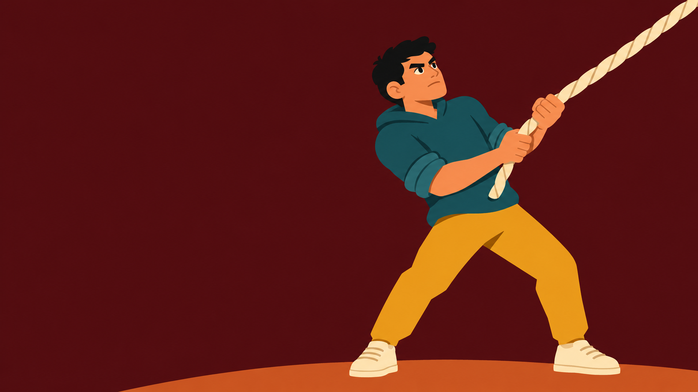
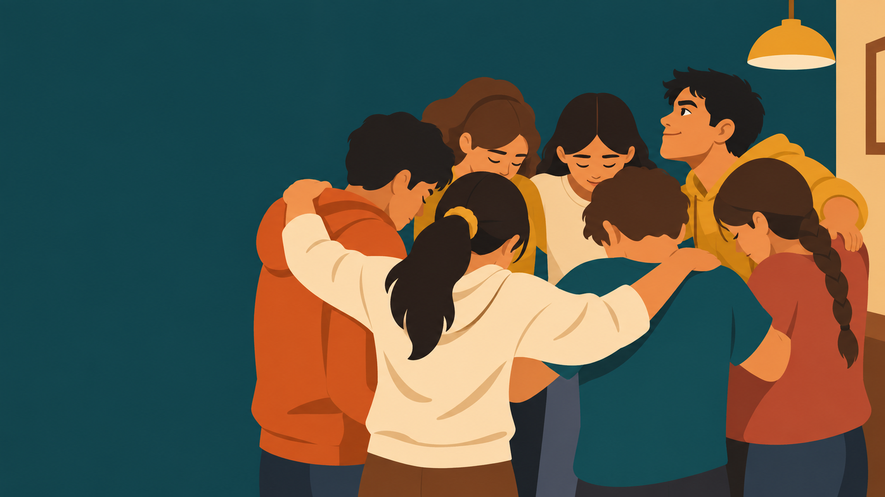
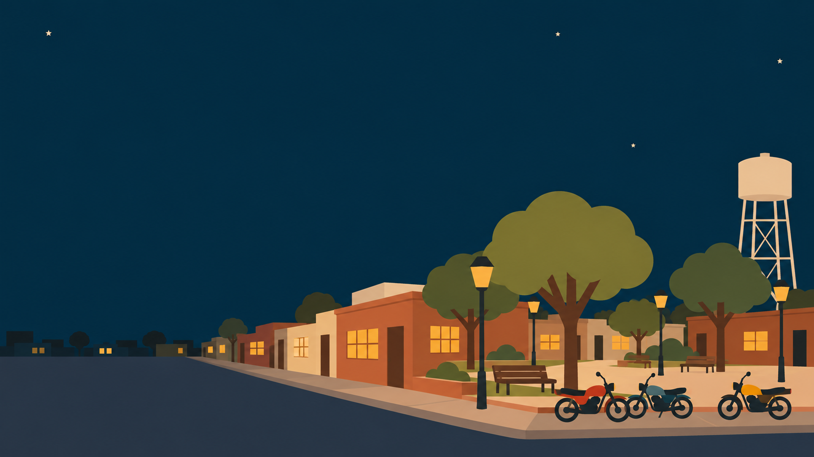

Casas de Oración · Taller 1
¿Por qué una casa de oración?
Lucas 18:1
Apunte y guía de oracióncasadeoracion-elrenuevo.netlify.app/t1



Apunte y guía de oracióncasadeoracion-elrenuevo.netlify.app/t1





